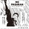

너무 유명하고, 내용도 어느 정도는 알고 있다고 생각하지만, 실제로 읽지는 않았던 책 백범일지를 읽었다.
난세가 아니었던 때가 언제 있었느냐만은 지금의 암울한 시대도 그렇고, 개인적으로도 뭔가 침체된 느낌이 지속되고 있어, 위인전을 읽어봐야겠다 생각했다.
그래서 난중일기를 읽었고, 그 다음으로 백범일지를 도서관에서 빌렸다.
우리나라 사람이 가장 존경하는 인물로 설문조사를 하면 항상 1~2위를 차지하는 분이 백범 김구인데, 그렇게 고생과 희생을 하고서도 해방이후 권력을 차지하지 못했고, 결국 암살되었다는 사실이 참담하기는 하다.
노무현 대통령의 '운명이다'라는 책에서 우리나라 현대사의 위인은 왜 패배자뿐인가하며 존경하는 인물을 백범김구에서 워싱턴으로 하기로 했다는 구절이 생각나더군.
고난과 역경의 시대에 자신을 나라에 바친 사람과 그 후손들이 오히려 더 비참하게 살고 있는 것도 사실이고 말이다.
김어준이 서울시장후보 박원순을 변호하면 한 말이 생각났다.
잘 나가던 변호사가 자신 재산을 털어 시민운동을 하였다. 이런 사람이 온갖 네가티브로 매장당하면 그걸 보고 앞으로 누가 시민운동을 하고, 의로운 행위를 할 것인가라고 한 것이.
백범일지를 읽으며 인상적이었던 부분
1. 자신의 조상이 반역자라고 첫 문장부터 쓴 점. 그런데, 실제로는 김자점의 후손은 아니라고 하는군.
우리선조는 안동 김씨로 김자점씨의 방계 후손이다. 김자점씨가 반역죄를 저질러 온 집안이 화를 입을 때... 숨어 살았다.
우리 조상들은 양반이 싫어서 상놈 행세를 한 것이 아니라 감자점의 일족임을 숨기고 집안이 화를 입는 것을 피하기 위해 일부러 상놈 노릇을 했다.
2. 치하포에서 왜놈을 죽이고, 자신의 정체를 방을 붙이고, 도망가지도 않은 점.
'국모의 원수를 갚기 위해 이 왜놈을 죽이노라'라고 밝히고, '해주 백운방 텃골 김창수'라고 써서 사람들이 지나다니는 길거리 벽에 붙이게 했다.
3. 고문하는 일본 순사의 최선함에 자신을 반성하던 일.
왜놈들이 밤을 꼬박 새우면서 신문하고 온 힘을 다해 자신들의 맡은 일에 최선을 다하는 것을 볼 때 스스로 부끄러움을 견딜 수가 없었다. 나는 평소에 무슨 일이든지 성심껏 한다는 자신이 있었다. 그러나 국가를 구하고자, 곧 나라를 남에게 먹히지 않게 하겠다던 내가, 남의 나라를 한꺼번에 삼키고 씹어대는 저 왜구처럼 밤새워 일해 본 적이 몇 번이나 있었던가?
4. 윤봉길 의사 의거전 윤봉길에 들려주는 자신의 신념.
가지 잡고 나무를 오르는 것은 그다지 대단할 것은 없어나, 벼랑에 매달려 잡은 손을 놓을 수 있어야 장부라 할 수 있다.
5. 한창 광복군의 국내침투 계획중 일본 패망 소식을 듣던 심점.
축주석은 전화실로 들어가더니 잠시 후 뛰어나오며, "왜적이 항복한답니다." 한다.
그것은 내게 기쁜 소식이라기보다는 차라리 하늘이 무너지고 땅이 꺼지는 듯한 일이었다. 몇년 동안 고생하면서 참전을 준비한 것도 모두 허사가 되고 말았다. 서안과 부양에서 훈련받은 우리 청년들에게 각종 비밀무기와 무전기를 휴대시켜 산동반도에서 미국 잠수함에 태워 국내에 침투시켜 주유 지점에서 각종 공작을 전개하여 인심을 선동하고, 무전으로 연락하여 미국 비행기로 무기를 운반할 계획까지 미국 육군성과 다 약속해 두었었다. 그런데 이제 그런 계획을 한번 실행해보지도 못하고 왜적이 항복했으니, 진실로 지금까지 들인 정성이 아깝고 앞으로 닥칠 일이 걱정되지 않을 수 없었다.
책을 다 읽으면서 어떻게 이렇게 비현실적으로 투철한 위인의 삶을 산 사람이 있을까라는, 정말 위대한 분이라는 생각이 들었다.
백범의 후손도 다른 독립군의 후손들처럼 비참한 삶을 살지는 않은지 검색해봤다.
장남만 해방을 못 보고 죽은 것 외에는 차남은 공군참모총장,장관,국회의원도 지냈고, 손자들도 높은 위치에 있더군.
그나마 다행이다.


덧글
 에른스트 2011/12/17 23:27 # 삭제 답글
김구는 일본군 중위라고 믿고 있지만, 실제로는 일본인 상인이고, 이 사건으로 고종이 배상했다는 기록도 나와 있다더군요.
일본의 입장에서 김구는 테러리스트일 수도 있죠.
에른스트 2011/12/19 09:51 # 삭제
당시 기사
http://gonews.kinds.or.kr/OLD_NEWS_IMG3/DLD/DLD18960922u00_02.pdf
1896년 9월 22일 기사
http://gonews.kinds.or.kr/OLD_NEWS_IMG3/DLD/DLD18961107u00_02.pdf
1896년 11월 7일 기사
그전 인천 재판소에서 잡은 강도 김창수는 자칭 좌통령이라 하고 일상(일본상인) 토전양량(스치다 조료)를 때려죽여 강에 던지고 재물을 탈취한 죄로 교(교수형)에 차기로 하고
http://e-gonghun.mpva.go.kr/portal/web/book/book_xml_view.jsp?lm_sHisCode=PV_DJ&lm_sBookCode=A011&lm_sItemCode=002.000.000.000&lm_sSrchYear=&keyword
"이튿날 밝은 새벽에 조반을 마치고 길을 떠나려 하였는데, 점막(店幕)의 법도가 나그네에게 밥상을 줄 때 노소(老少)를 분별하여 그 차례를 마땅히 지켜야 하는데도 손님 중에 단발을 하고 칼을 찬 수상한 사람이 밥상을 먼저 요구하자 여점원이 그 사람에게 먼저 밥상을 주므로 마음으로 심히 분개하였다"
(국모보수는 3차 심문에서 나옵니다)
헌데, 너무 강도 살인으로 몰고 가시려는 듯 하네요.
치하포 사건시 김구는 일본인 상인이라는 것을 인지하고 살해한 것이라기 보다는, 일본군 중위라고 믿고 있었죠.
오늘날 '테러리스트'라는 단어의 이미지 자체로만 본다면, 김구는 테러리스트라고 할 수 있지요. 광복군은 그냥 반정부 테러집단이라 할 수도 있죠.
백범이 흠결 없는 완벽한 위인이 아니라는 것은 책을 읽다보면 느낄 수 있습니다. 그리고 굳이 그 흠결을 감출려고 한 것 같지도 않구요.
리더쉽도 제대로 된 작전 계획도 없이 동학군을 이끌었다가 떼죽음으로 몬 것도 그렇고, 땡중생활한 것도 그렇고, 영 시원찮은 것도 적어놨더군요.
백범일지가 일기가 아닌 일지고, 그렇다보니 기억에 의존해서 쓴 것이다 보니, 날짜관계나 사실관계가 틀린 것도 제법 됩니다.
몇가지 흠결이 있다고 미화 날조가 심한 책이니, 미화와 왜곡이 절정에 이른 사람이니 하는 것은 어떤 프레임의 사관을 가지고 계신지 궁금하게 하네요.
에른스트 2011/12/19 19:18 # 삭제
http://pds24.egloos.com/pds/201111/15/64/d0075264_4ec1f9d32e43e.jpg
공초록을 봐도 군인으로 알고 죽인게 아니고, 밥상을 먼저 차려줘서 화가 났다고 대답했습니다. (밥상을 먼저 받았다고 화가 난게 아니라, 재물을 훔쳤으니 강도 살인맞음)
광복군... 사실 광복군은 테러단체가 아닙니다. 일본군과 교전한적이 한번도 없습니다.
D모 교수는 평범한 상인인 스치다를 무리하게 일본 계림장업단 밀정으로 몰려다가, 김완섭이 스치다의 신분때문에 소송이 걸려서 이기자 '슬그머니' 삭제합니다.
에른스트 2011/12/19 19:19 # 삭제
http://newslibrary.naver.com/viewer/index.nhn?articleId=1997081300329119001&edtNo=45&printCount=1&publishDate=1997-08-13&officeId=00032&pageNo=19&printNo=16186&publishType=00010
위대한 독립운동가에게 죽었다고 무리하게 밀정으로 모는 학자.
http://www.history.go.kr/url.jsp?ID=NIKH.DB-jh_009r_0010_0050
(5) [日本人 土田讓亮의 被殺事件과 犯人逮捕要求 件]
문서번호 公文第20號
발송일 1896년 3월 31일 (1896-03-31)
계림장업단인가?
http://www.history.go.kr/url.jsp?ID=NIKH.DB-jh_012r_0010_0090
1. 현재의 정황
계림장업단은 지난 1896년 5월 仁川에서 조직되어 그해 8월에 이르러 지부를 京城, 釜山, 元山에 설치하였음.
에른스트 2011/12/19 19:23 # 삭제
http://gall.dcinside.com/history/602044
안악의 애국계몽운동을 했다가 감옥 간것도 실제로는 강도 사건으로 감옥간겁니다.
http://e-gonghun.mpva.go.kr/portal/web/book/book_pdf_view.jsp?lm_sHisCode=PV_PG&lm_sBookCode=0001&lm_sItemCode=&lm_sSrchYear=&keyword=
판결문 사료메타 상세조회
판결년도는 1911년으로 맞추고, 1/2에 있다. (이미지 보기 기능이 있습니다)
1911/07/22 안명근 등 18인 판결문 경성지방재판소
1911/09/04 안명근 등 24인 판결문 경성공소원
http://e-gonghun.mpva.go.kr/portal/web/book/book_xml_view.jsp?lm_sHisCode=PV_DJ&lm_sBookCode=A011&lm_sItemCode=&lm_sSrchYear=&keyword=
독립운동사자료집 11 : 의열투쟁사자료집
재판기록
안명근(安明根) 33세 등 판결
황해도 신천군 두나일소면(斗羅一所面) 청계동(淸溪洞) 1통 4호
농업 해주읍 출생
강도 및 강도미수
안명근(安明根) 33세
(우리가 잘 아는 이름도 있습니다. 황해도 안악군장경면(長庚面) 비석동(碑石洞) 1통 2호 학교교사황해도강령군(康翎) 출생
강도미수 보안법 위반 김구(金龜) 36세)
말하신 고종의 전화 이야기도 나오죠.
고종이 전화를 사용한 시기가 백범의 사형집행 연기된 시점부터 나중이라고,.
하지만, 김구는 고종이 전화로 했다고 믿고 있었다고 나오죠.
정보가 부족해서 그런 걸 거짓말이라고 치부할 수는 없겠죠.
그런데, 에른스트님은 김구를 꽤나 싫어하시나봐요?
우리 현대사에서 어떤 분을 존경하는지 궁금하네요.
에른스트 2011/12/20 00:07 # 삭제
에른스트 2011/12/20 00:13 # 삭제
알려주신 여러 자료들의 집중적으로 배포하는 출처를 검색해보니 대부분 뉴라이트쪽에서 나온 것이네요. 항일독립운동을 부정하려는 대표적은 단체이지요.
독립운동가중 제일 유명한 김구의 흠결을 침소붕대함으로써 독립운동가를 위인 목록에서 제거하려는 의도처럼 느껴집니다.
일제강점기와 독립운동에 대한 개인적인 역사의식을 듣고 싶네요.
에른스트 2011/12/20 10:27 # 삭제
(짤방)
http://theme.archives.go.kr/next/indy/formCrimeSearch.do
죄명검색란에서 '전체보기'를 클릭하기 바랍니다. 그러면 기타 죄명들도 모두 나옵니다. 오늘 새롭게 깨달은 사실들입니다.
http://pds24.egloos.com/pds/201111/11/64/d0075264_4ebc97d78b484.jpg
http://pds22.egloos.com/pds/201111/11/64/d0075264_4ebc9a4d5a24f.jpg
에른스트 2011/12/20 10:28 # 삭제
가지고 계신 다른 자료도 보여주세요.
gentlyrock 2011/12/18 20:29 # 삭제 답글
백범일지보고 그 엄청난 터프함에 놀랐던 기억이 나네요 ㅋ
에른스트 2011/12/19 09:53 # 삭제
전 너무 오래전에 책을 읽었나봐요....
저는 이제서야 읽었답니다.
에른스트 2011/12/20 19:33 # 삭제 답글
김구와 송진우는 대화한지 몇시간뒤 한현우와 유근배 일당에게 피살됩니다. 다음해인 1946년에 한현우와 권총을 준 전백이라는 사람외 일당들이 체포됩니다. 김구는 이 일로 미군정의 하지 중장에게 야단맞습니다.
http://pds21.egloos.com/pds/201111/24/64/d0075264_4ecdb1afd5144.jpg (짤방)
한현우는 전백에게 몰래 보낸 서신에 의하면, 자기는 여운형과 박헌영 암살을 주장했는데 전백이 송진우 암살을 강력히 주장했다고 합니다.
http://www.history.go.kr/url.jsp?ID=NIKH.DB-np_fp_1946_04_10_0200
송진우씨 살해 범인 3명 검거 작년 12월 30일 송진우씨가 암살당하자 그 범인에 대한 일반의 관심이 컸던바,경기도 경찰부에서는 송진우씨 신변 경비인들을 수상히 보고 은밀히 수사해왔는데 드디어 9일 오전 8시 13분경 인용***(판독불가)에서 범인 ***(한자식별 불가)건 송씨 경비원을 체포하였고, 동인의 진술에 의하여 공범 김**(판독불가)을 오전 10시 12분경 신*로 204번지시 한현우의 집에서 체포하였는데 공범 2명도 ***체포되리라 한다.
(생략)
http://www.history.go.kr/url.jsp?ID=NIKH.DB-np_fp_1946_04_12_0250
http://db.history.go.kr/front2010/dirservice/ibrowser/viewIpqDataNP.jsp?pItemCode=np_fp&pIpqParam=np_fp_19460412_v0002&pLevel=6&pDatabaseID=np_fp&pRecordID=np_fp_1946_04_12_0250&pTitle=%ec%9e%90%ec%9c%a0%ec%8b%a0%eb%ac%b8+%3e+1946%eb%85%84+%3e+04%ec%9b%94+%3e+12%ec%9d%bc+%3e+%ea%b6%8c%ec%b4%9d%2c+%ec%a7%80%eb%a2%b0+%eb%ac%b4%ea%b8%b0+%eb%8b%a4%ec%88%98+%eb%b0%9c%ea%b2%ac...
권총 지뢰 무기 다수 발견
(중략) 이미 보도한바와 같이 송진우씨 암살사건의 범인을 체포한 경기도 경찰부 형사과에서는 방금 엄중취조를 하고있는 중인데 대략 11일 새벽 신*로 모처에서 동범인이 송진우 씨 암살 당시에 사용하던 무기이외에 다시 권총 2자루외 일본도 3자루 탄환 200여발,도화선 지뢰동 땅속에 숨겨둔것을 압수하여 왔는데 이와 같이 수많은 무기가 발견되어 동 사건 배후관계의 진적여하는 자못 주먹되고 있다.
http://newslibrary.naver.com/viewer/index.nhn?articleId=1947020500209202001&edtNo=1&printCount=1&publishDate=1947-02-05&officeId=00020&pageNo=2&printNo=7195&publishType=00020
http://www.history.go.kr/url.jsp?ID=NIKH.DB-np_da_1947_02_05_0160
송진우 선생 암살사건 재심에 나타난 새 단서 동아일보 1947년 2월 5일 기사.
재심서 나타난 새 단서, 옥중서한의 파문. "송씨 암살은 전이 극력주장." 살해범한을 격찬. 전후 십여만원을 준 전백
한국 민주당 당수 고하 송진우 선생을 암살한 한현우외 4명에 대한 공소 공판은 지난 31일 대법원정에서 열렸는데, 이날 심리진행도중 주범 한현우에게 돌연 새로운 질문이
재판장으로부터 추궁되어 극히 미묘하고 모호한 문답ㅇ 재판장과 입회,검찰관 또 피고 한현우 사이에 계속된 사실이 있었다.
즉 한현우가 송진우씨 암살직전,직후에 그 범행을 상의하고 또 범행 결과를 보고하는등 한현우에게는 유일무이한 혁명선배라고 하는 문제의 전백이와의 관계를 술회하여 그의 지인인 시내 이모씨에게 보낸 별항과 같은 한현우의 옥중서한이었다.
심경의 일단을 피력한 한현우의 서한이 그후 이씨의 손을 거쳐 검찰관의 손에 들어가게 되여 드디어 이날 공판장에 한낮 새로운 사실로 나타나 재판장과 입회 검찰관의 신경을 더 한층 예민하게 한것인데, 이상기 재판장이 이 편지의 피봉을 떼기전에 먼저 피고 한현우와 문답한것은
재판장 : 피고는 전백이를 처음에는 우익으로 알았으나 지금은 좌익으로 아는게 아닌가?
피고 한현우 : 절대로 그렇지 않습니다.
재판장 : 송진우씨를 A라고 주장한것은 전백이라고 했다지.
피고 : 그런사실 없습니다.
재판장 : 그런 의미의 편지를 모처에 보낸 사실이 있지 않은가.
피고 : 없소.
이 때 입회검찰관 이명용씨로부터 한현우가 이모에게 보낸 편지를 내어놓으며 "이것이 피고의 필적이 아닌가."하고 물음에 대하여 한현우는 그 편지를 받아본후 고개를 좌우로 흔들며 부인하였다. 한현우의 편지에 나타난 필적 부인으로 이 문제는 더 진전을 보지못하고 이날은 이것으로 일단 그쳤으나,
편지 내용이 핵심인 "본래 송진우는 전백이 이야기, 재작년(1945년) 12월 29일 송진우 선생 살해당시로 돌아가 그때 암살범 한현우를 살인교사하였다는 전백이와 한현우 관꼐는 아직도 세인의 의혹을 자아내고 있는 극력주장한것이고,소생(한현우)은 여운형,박헌영을 주장한바이다."라는 서한에 비추어 과연 송진우씨의 암살은 한현우의 주장이 아니고 전백의 주장이였고 교사였든? 그러나
한현우 자신이 그 필적을 부인하는데 있어 검찰당국은 앞으로 어떻게 이 문제를 해결하는가? 하는 것으로 세인의 주목을 집중하고 있다한다. 지난 31일 서울대법원에서 열린 동 사건 공소판정에서 진술한 한현우의 전백론은 송진우씨 등 정치 요인 암살을 계획하고 이를 교사,격려하는 실로 전율할 암흑의 일장면이 저물어가는 해방의 이땅에 전개된것을 새로히 기억할수있다.
이날 공판정에서 교환된 범죄 사실 심리중 특히 한현우와 전백과의 관계에 대한 문답몇가지를 소개하기로 한다.
재판장 : 송진우씨를 죽이기 전날 피고는 전백이를 찾아가서 무슨 말을 했는가?
한현우 : 송진우씨를 죽이겠다고 했더니 전백말이 신중히 생각해서 처치하라고 했소.
재판장 : 송진우씨를 죽인 그 이튿날 전화로 불러서 무엇이라고 하던가?
한현우 : 내가 송진우씨를 죽였다고 했더니,참 용감하였다고 하였소.
http://newslibrary.naver.com/viewer/index.nhn?articleId=1947020500209202002&edtNo=1&printCount=1&publishDate=1947-02-05&officeId=00020&pageNo=2&printNo=7195&publishType=00020
문제의 서한 일절(위와 같은 지면에 있는 기사)
전략, 전백이와 소생(한현우)의 관계는 미묘한것이올시다. 이용봉군이 소개할때는 민족주의인줄 알고 또 임정지지자로 알고 있었고, 그럼으로 악수한것이올시다. 그랬더니 세간의 여론은 전백을 좌익이라하니 대단히 딱합니다. 만약 전백이 좌익이라면 이 사건의 책임은 전백에게 있습니다. 본래 송진우는 전백이 극력주장한것이고 소생(한현우) 여운형,박헌영을 주장한바, 결국 송진우,여운형,박헌영을 처단하기로 결정한것이올시다. 이점도 하량하옵소서. 소생이 민족주의자라는것은 선생님이 잘 아시는 바올시다. 소생의 심의와 정치의도를 잘 이해해주실줄압니다. 약.
1월 11일 한현우 복백.
에른스트 2011/12/20 19:38 # 삭제 답글
◦ Robinson, 8－1646, Interview with Leonard Bertsch, Political Advisor for Gen. Hodge
∙ 송진우 암살범이 김구라고 강하게 암시. 또 정무총감 엔도와 여운형 간의 교섭과정에 대한 여운홍의 얘기를 기록.
◦ G-2 WS 98, 7－2047,
∙ 여운형 암살, 송진우 암살과 연결되어 있다. 한지근이 자기는 송진우 암살에 연루된 한현우가 이끄는 그룹에 속해 있었다고 실토.
[출처 : 국사편찬위원회 한국사데이터베이스 http://db.history.go.kr]
에른스트 2011/12/20 19:39 # 삭제 답글
─ 여운형 씨를 살해하겠다는 것은 거기서 한 얘기가 아니고요?
▲ 그건 계통이 다르죠. 그것은 내가 보기에 밑에 사람들이……, 백의사가 대한임시정부 계통이에요. 염동진 씨가 대한임시정부 계통이라고요. 그렇기 때문에 신익희 씨하고 전국의 대한임시정부 요원들이 늘 거기를 가요.
<위의 대담과 실제 라디오 증언들은 조금 어긋납니다. 직접 들어보시기 바랍니다.>
그건 계통이 다르죠. 그건 될수있으면 밑에 사람들이 내가 봤을때는 대한 임시정부에 대하여는 지시 명령을 받아가지고...
아마 백의사가 대한 임시정부 계통이에요. 저게 염동진씨가 저게 비록 대한 임시정부 계통이라고요, 저게 계통이... 계보가...
그렇기때문에 신익희씨하고 전국의 대한임시정부 요원들이 늘 거기를 가요. 여기서 저쪽으로 보고하고... 그러것는데...
계통인데... 대한임시정부 계통으로써의 내가 지금 다친 사람을 감안할때 암살당한 사람들 같으면 송진우,장덕수
상대방 : 그분들은 임시정부 계통이 아니라 한민당쪽이죠.
김두한 : 아니지. 대한 임시정부 계통에서 암살한거지.
플레이어를 클릭하여 런닝타임 7분쯤부터 들어보길 바랍니다. (7분과 10분사이에 나옵니다)
에른스트 2011/12/20 19:42 # 삭제 답글
제목 장덕수 살해사건 제5회 공판 개정
장씨살해사건 제5회 군사재판은 8일 오전 9시에 개정하였다.
이날 오전 재판에서 피고 김석황의 4일 이미 미군조사기관에서 진술한 진술서를 낭독하였는데 피고들이 조사기관의 질문에 대답한 진술내용은 대략 다음과 같다.
김석황(54):본인은 국민의회 동원부장이다. 중국 망명생활을 하는 동안 대한임시정부 주석인 김구선생을 친히 1년 동안 모신 일이 있다. (조사관의 질문은 피고 김모와 김구와의 관계를 주로 진행되고 있다) 귀국 후는 별로 가까웁지 않았으며 1947년 11월31일 민대·국의합동문제로 찾아갔었다. 장덕수를 살해한 박광옥을 본인은 모른다. 장씨살해문제에 관해서는 신일준(피고)으로부터 1947년 7월경에 민족반역자를 숙청해야 한다는 말 가운데에 장덕수 배은희 안재홍을 죽여야 한다고 들었으나 말렸다. 그후 신은 김중목이가 적임자라고 말했다. 며칠 후 김구선생을 찾았을 때 이런 말을 했더니 이놈들은 나쁜놈이야라고 했다.
이때 본인은 이 말이 장덕수를 죽이라는 직접명령은 아니나 원하고 있다는 것으로 알고 신·김에게 말했다. 그후 살해계획을 김구선생께 알렸더니
아 그런가라고만 하였다. 본인의 주머니속의 편지는 누구라고 이름은 안 썼으나 인편이 있으면 김구씨에게 보내려고 한 것이다.
조상항(56):국의 정무회 비서장이고 이번 사건에 관해서는 리박사 밑에서 소란스럽게 하고 있는 장덕수를 죽여야 한다고 말이 있었을 때 신이 부하를 시켜서 혁명단을 조직하였다. 1947년 8월 중순경 경원려관에서 김석황으로부터 김구선생의 지령이 있었다고 들었다.
그때 말 가운데에 좌익의 김원봉 박헌영도 죽여야 한다고 결의하였었다.
여기에 일단 휴정한 다음 다시 신일준(46) 손정수(58) 김중목(38)의 진술서 낭독이 계속되었는데 이들의 진술내용은 간단했으며 범행동기와 공범들과의 관계 등으로 되어 있었다. 오전은 이상으로 오후 1시반부터 나머지 5명에 대한 진술서 낭독이 계속될 것이다.
http://www.history.go.kr/url.jsp?ID=NIKH.DB-dh_006_1948_03_12_0050
김구, 장덕수암살사건 8회 재판의 증인심문에서 관련성 부인
이로부터 전기 4명의 진술서 중 필요한 부분만을 계속해 낭독하였는데 그 내용의 요점만을 적으면 이런 것이다.
결국 4명이 진술한 것 중에서 공동 일치한 점인데 1. 처음에 김석황이가 김구선생은 張씨를 처치하기를 원한다는 말을 했다는 것 2. 그의 사실여부를 알아보려고 김석황 이외의 전기 3명이 죽첨장에 김구를 찾아만났더니 장덕수 明濟世 裵恩希 등 사람들은 李박사 밑에서 일하면서 미소공위에 참가한다니 죽일 놈들이다라고 김구씨가 말하는 것을 듣고 그 분심을 짐작하는 동시에 김석황의 말을 확인했다는 것 주로 이 점이었다. 이에 金重穆의 진술서인 증거품 10호 중 이상에 일치된 요점을 낭독하고 나서 라만검사는 다시 심문하였다.
(중략)
여기서 검사는 여섯장의 사진을 가지고 김구앞에 다가서며 보였는데 각각 청년 한 사람이 태극기 앞에서 수류탄을 양손에 들고 서있고 혈서가 적혀 있는 사진이다.
[출처 : 국사편찬위원회 한국사데이터베이스 http://db.history.go.kr]
에른스트 2011/12/20 19:44 # 삭제 답글
http://newslibrary.naver.com/viewer/index.nhn?articleId=1974021300329206015&edtNo=2&printCount=1&publishDate=1974-02-13&officeId=00032&pageNo=6&printNo=8732&publishType=00020
暗殺者(암살자) <6> 古下(고하)·雪山(설산) 저격범들 1974.02.13 경향신문
27년만에 다시 클로즈업된 몽양 사건 진상을 쫓아 3사건(송진우,여운형,장덕수 암살사건)이 서로 밀착. 한 사람만 희생하는 거다. 신동운의 선독범 각본. 한데 모여 기념 촬영도 몽양의 암살은 고하(송진우),설산(장덕수),백범(김구) 등 광복 후 잇달아 일어났던 다른 지도자의 암살사건과 따로 떼어서 설명될수없다. 몽양 암살후 27만에 일부가 새롭게 밝혀지고 있는 오늘에 와서 적어도 백범을 제외한 3 암살사건은 이에 관계된 인물이 서로 밀접하게 이어지고 있기때문이다.
1945년 12월 30일 상오 6시 30분 서울시 원서동 74 자택에서 취침중이던 고하 송진우는 5~6명의 괴한의 승격을 받고 6발의 권총탄을 맞고 쓰러졌다. 광복후 지도자에 대한 첫 암살이었다.
1 모스크바 3상 회담에서 한국의 신탁통치가 결정된 사실이 발표된지 꼭 이틀만의 일이었다. 신탁통치문제는 사실상 그보다 2달전쯤인 10월 24일 미 국무성 빈센트 극동 국장의 발언으로 우리나라에 알려지게 되었고, 그 즉시 거족적인 반탁성명이 각계에서 나오기도 했지만 막상 미국,영국,소련 3개국의 최후 결정이 밝혀지자 국내는 이 문제를 놓고 온통 발칵 뒤집힌 판이었다.
한민당 수석총무로 있던 고하는 암살 당하기전만해도 죽첨장(후에 경교장)으로 백범 김구를 찾아 오래도록 신탁통치문제를 논의했다. 그러나 당시 거의 누구나가 반탁이 바로 애국인양 생각하는 대세속에서도 고하는 무조건 반탁에는 의견을 달리했다.
국제적인 대세를 무시할수없고 자칫 반탁은 조국의 분단을 가져올것이라는 견해때문이었다. 몽양의 건준(건국준비위원회)이 임정의 환국을 기다리지 않고 독주할때에도 꿋꿋이 임정봉대론을 주창한 고하였기에 환국후 남달리 가까웠던 백범과의 관계도 이렇게해서 갑자기 멀어지게 되지 않을수없었다.
고하의 암살범 한현우 일당은 이듬해 4월 8일 경찰에 붙잡혔다. 한현우,유근배,김의현,이창희,김인성등 5명. 그 배후 인물로 전백(본명 전병구)이 잡힘으로써 사건수사는 매듭지었다. 여기서 주목할것은 이들이 잡히기전에 같은 공범으로 신동운,백남석등이 경찰에 잡혔다가 미행수사를 위해 풀려났고 그후 이들은 용케도 기소되지 않았다는 점이다. 이중 백은 월북한것으로 알려졌고 신은 바로 몽양 사건에 다시 등장, 한지근 단독범의 각본을 만든 장본인으로 나타나 주목을 끌고 있었다.
몽양 사건이 신에 의한 각본이 드러나고 잇어 고하 사건의 진상도 상당히 꾸며졌으리라는 것도 짐작케 할수있고 표면에 내세운 전백이란 인물 이상의 배후가 몽양사건과도 통하는 것이 아닌가 보이는 것이다.
몽양 암살사건후 4일째인 1947년 7월 23일 정오 시내 모처에서 당시 수도청 수사과장 노덕술(작고)이 신일준이라는 젊은이(국민의회 간부, 한국독립당 간부)와 오랫동안 밀담을 거듭했다. 그날밤 그의 사무실에 다시 신동운이 나타나 밀담을 계속했다. 그로부터 하루후인 24일 하오 5시 중구 저동 유풍기업 2층 방문을 열고 신일준이 나타났다. 안에는 바로 몽양 암살사건의 범인 이필형(가명 한지근),유순필,김훈과 또 한 사람이 화투를 치며 시간을 보내고 있었다. 그들과 신과는 처음 만나는 사이. 누가 이필형이지? 신은 앞으로 나서는 이필형의 손을 덥썩잡고 "한사람만 희생하는거다."하며 눈물을 글썽거렸다.
뒤이어 신동운이 이끄는 수도청 수사과 강력주임 박경림 경위가 형사 1명과 함께 방에 들어섰다. "누가 희생되겠나? 한 사람만 희생하자." 박경위의 말이 떨어지자, "내가 여운형을 쐈다."며 이필형이 앞으로 나섰다. 신이 기념촬영을 하자는 제의에 따라 경찰 사진사를 불러 이를 가운데 세우고 신일준,신동운,유순필,김훈등이 나란히 선채 기념사진을 찍었다.
여기까지가 이필형이 한지근으로 둔갑,단독범으로 각본을 꾸미게된 과정. 몽양 암살사건의 공범이라고 나선 4명도 어떤 경로로 누구에 의해 이런 각본이 이루어졌는지 알수없다는 말이다. 그러나 문제의 신동운이 등장함으로써 수수께끼가 풀리려하고 있다.
그뿐이나 아니다. 신일준은 다름아닌 설산(장덕수) 암살범으로 사형을 선고받고 6.25때 풀려나온 후 신일양으로 이름을 고쳐 현재도 정계에 관계하고 있는 인물. 사건은 다시 설산 장덕수 암살사건돠 밀접하게 이어지고 있다. "잘만하면 광복후에 일어났던 일련의 암살사건들이 한실로 꿰이듯 베일을 벗을지도 모른다." 27년만에 다시 몽양 암살진상을 쫓는 서울지검 배명인 부장검사의 설명대로 무언가 배후에 이어지는 연결점이 정체를 드러낼것 같다.
기사에 안나오는 사실.
송진우 암살범과 장덕수 암살범의 접점.
일본 중의원 회의록
http://kokkai.ndl.go.jp/SENTAKU/syugiin/051/0082/05104150082009a.html
この宋鎮禹という韓国政界の大ものを暗殺した韓賢宇という人物、この宋鎮禹という人は、李承晩政府の副大統領であった金性沫という方と一緒になって韓国民主党をつくった人です。そしてその首席総務になった人です。その人を暗殺した韓賢宇という人物が日本に来ている。その身元引き受け人が亜細亜大学講師の崔書勉という人であるというふうに私は承知いたしております。
송진우라고 하는 한국 정계의 대의 것을 암살한 한현우라고 하는 인물, 이 송진우라고 하는 사람은, 이승만 정부의 부통령인 김성수이라고 하는 분과 함께 되어 한국민주당을 만든 사람입니다.그리고 그 수석 총무가 된 사람입니다.그 사람을 암살한 한현우라고 하는 인물이 일본에 와있다. 그 신원 보증인이 아세아 대학 강사 최서면(장덕수 암살공범 최중하)이라고 하는 사람이다고 하는 식으로 나는 전해들었습니다.(번역기 직역)
에른스트 2011/12/20 19:45 # 삭제 답글
도진순은 실리 보고서가 공개되니, 또 거짓말을 했어요.
-분단의 내일, 통일의 역사 (2001년 7월 20일 발행)
1946년 전반 백의사를 비롯한 임정계 반탁운동원들은 북한지역에 침투하여 김일성,김책,최용건,강량욱등에 대한 암살,테러를 시도하는 한편, 반탁운동을 선동하고 임정의 정권접수를 선포했다. (268페이지)
- http://news.donga.com/3/all/20010904/7733898/1
안두희가 백의사이며, 여운형과 장덕수 암살이 백의사에 이루졌을거라는 추측이 나오는 2001년 9월 4일에 실리보고서 공개 뒤
http://www.donga.com/docs/magazine/new_donga/200110/politic06.html
-신동아 2001년 10월호
오히려 문서를 통독해 본 사람은 쉽게 알 수 있듯이, 문서 전반의 흐름에서 염동진-백의사와 김구의 관련은 적대적이라기보다 상호의존적이다.
(중략)
다음 염동진이나 백의사는 광복 이후 백범과 일정한 거리를 유지하면서 독자적으로 활동하였으며,
백의사에 대한 소련군정문서를 봅시다.
http://www.history.go.kr/url.jsp?ID=NIKH.DB-fs_006_0010_0010
(타) 테러단체들에 대하여：보도에 의하면 테러단체 ‘백의사(白衣社)’가 조직되었다고 한다. 이 단체는 김구의 직접적인 지도 하에 있다. 이 단체에는 중국에서 돌아온 조선인들(임정요인들)과 일부 청단단체 회원들이 포함되어 있다. 이 단체의 목적은 공산당과 인민당의 당원들 및 인민위원회 지도자들을 살해하는 것이다.
에른스트 2011/12/20 19:47 # 삭제 답글
이승만과 김구, 독립정부수립에 의견 일치(1947년 11월 30일)(http://www.history.go.kr/url.jsp?ID=NIKH.DB-dh_005_1947_11_30_0080)'
한독당 김구, 정부수립과 민족단결 문제에 관해 담화 발표(1947년 12월 1일)(http://www.history.go.kr/url.jsp?ID=NIKH.DB-dh_005_1947_12_01_0090)
李承晩 博士가 주장하는 정부는 상술한 제일의 경우에 치중할 뿐이지 결국에 내가 주장하는 정부와 같은 것인데 세인이 그것을 오해하고 단독정부라 하는 것은 유감이다.
한민당 정치부장 장덕수 피살(1947년 12월 2일)(http://www.history.go.kr/url.jsp?ID=NIKH.DB-dh_005_1947_12_02_0070)
단정수립 반대 성명을 발표(1947년 12월 22일 기사)(http://www.history.go.kr/url.jsp?ID=NIKH.DB-dh_005_1947_12_22_0010)한다
에른스트 2011/12/20 19:48 # 삭제 답글
보수성향의 홈페이지에서만 발표되었지만,공통적으로 일치됩니다.
http://www.allinkorea.net/sub_read.html?uid=8861§ion=section11§ion2
http://www.newdaily.co.kr/news/article.html?no=31859
김구: 내가 북한의 남북지도자연석회의에 참가하게 된 동기는 북한의 실제 모습을 보고 싶어서였소. 앞으로 3년간 북한이 북한군의 증강을 중지하고, 한국이 아무리 애를 써서 국군을 키운다해도 현재의 북한군에도 미치지 못할 것이오. 소련은 한국정부가 수립된다면, 비난을 받지 않으면서도 수월하게 남쪽을 급습할 것이고, 남쪽에서 조선인민공화국이 선포될 것이요.
에른스트 2011/12/20 19:52 # 삭제 답글
http://pdf.joinsmsn.com/article/pdf_article_prv.asp?id=DY01199411150099
http://pdf.joinsmsn.com/article/pdf_article_prv.asp?id=DY01199411150142
http://pdf.joinsmsn.com/article/pdf_article_prv.asp?id=DY01199411150140
http://pdf.joinsmsn.com/article/pdf_article_prv.asp?id=DY01199411160165
http://pdf.joinsmsn.com/article/pdf_article_prv.asp?id=DY01199411160163
http://pdf.joinsmsn.com/article/pdf_article_prv.asp?id=DY01199411170165
http://pdf.joinsmsn.com/article/pdf_article_prv.asp?id=DY01199411210144
http://pdf.joinsmsn.com/article/pdf_article_prv.asp?id=DY01199411220058
http://pdf.joinsmsn.com/article/pdf_article_prv.asp?id=DY01199411230155
http://pdf.joinsmsn.com/article/pdf_article_prv.asp?id=DY01199411240138
④자신의 장래 활동에 대해 △김 구=만일 미국인들이 나를 탄압한다면 북한에서 나에게 정치적 피난처를 제공할 수 있는가. △김일성=(긍정적으로 대답했다.)
에른스트 2011/12/20 19:59 # 삭제 답글
http://pdf.joinsmsn.com/article/pdf_article_prv.asp?id=DY01199407290109 기사
몇달뒤
http://imnews.imbc.com//20dbnews/history/1994/1941509_6142.html 모 정치인이 한국독립당 부분보고 말한 뉴스
http://media.daum.net/breakingnews/view.html?cateid=100000&newsid=19941021151500785&p=yonhap 기사
사찰요람 한국독립당편
네이버 한자사전, 필기체 인식기가 있습니다. http://hanja.naver.com/
http://pds24.egloos.com/pds/201111/13/64/d0075264_4ebf9d6ee727a.jpg
사찰요람 33페이지
http://pds23.egloos.com/pds/201111/13/64/d0075264_4ebf9d7032774.jpg
34페이지
http://pds23.egloos.com/pds/201111/13/64/d0075264_4ebf9d76d4622.jpg
35페이지 -
http://pds23.egloos.com/pds/201111/13/64/d0075264_4ebf9d7270eac.jpg
36페이지
http://pds23.egloos.com/pds/201111/13/64/d0075264_4ebf9d750941c.jpg
37페이지
http://pds24.egloos.com/pds/201111/13/64/d0075264_4ebf9d78ed993.jpg
38페이지 - 장덕수 암살에 대해 나옴
http://pds24.egloos.com/pds/201111/13/64/d0075264_4ebf9d7a70ef9.jpg
39페이지
http://pds22.egloos.com/pds/201111/13/64/d0075264_4ebf9d7c343c1.jpg
40페이지
http://pds24.egloos.com/pds/201111/13/64/d0075264_4ebf9d7de0352.jpg
41페이지
사찰요람을 볼수있는 도서관 검색 책바다
http://www.nl.go.kr/nill/user/Search/index.jsp?SearchMode=ResultList
韓國政黨史査察要覽 으로 검색하기 바랍니다. 한국독립당 편에 나와있습니다.
에른스트 2011/12/20 22:18 # 삭제
특히 독립신문은 대표적 친일신문으로, 기사 내용도 발로 뛴 취재라기 보다는 지금의 조중동처럼 일본 경찰의 발표 내용 받아 적었지요.
신빙성있는 자료로 보강해주세요.
에른스트 2011/12/21 11:50 # 삭제
저 이화장 문서, 유어만 회담록은 김구와 유어만이 회담한걸 유어만이 영문으로 기록하여 이승만에게 줬습니다. 이승만이 그걸 이화장에 보관해서 2000년에 공개한겁니다. 보수 성향의 언론에서만 공개했는데, 진보나 다른 언론들은 그걸 의도적으로 공개안한겁니다. http://blog.daum.net/morukhan/12031499
저 레베데프 비망록은 김국후 기자가 직접 레베데프를 만나서 얻은 겁니다. '평양의 소련군정'에도 나와있죠.
백범이 모든 면으로 완전체임을 믿는 것은 아니고, 독립운동에 세운 큰 공에 비해 과는 상대적으로 보여 집니다.
친일청산도 아직 못 했고, 친일파 조사도 제대로 못했는데, 독립운동가는 너무 탈탈 털리는 것이 안타깝기는 합니다.
에른스트 2011/12/22 22:08 # 삭제 답글